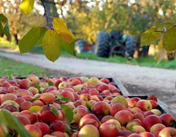
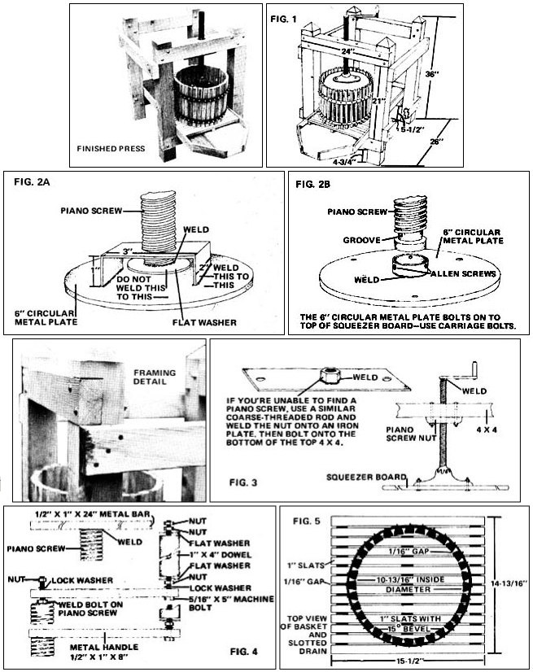

Before the advent of the pop bottle and urban sprawl, just about every farm had a cider press. These machines were lovingly built by highly skilled craftsmen called coopers, who also constructed the casks and barrels in which families stored flour, sugar, corn, water, beer, pickles, nails and many other commodities.
Nowadays, it's well nigh impossible to come by an old-fashioned barrel press. The very few that still exist are either quietly handed down from one generation to another within families or sold at outrageous prices in antique shops. Which means that if there's an apple orchard in your back pasture and you'd rather high-grade all that fallen fruit into cider than let the cows eat it, you'll have to break out the carpentry tools.
Now, I'm not a cooper (heaven forbid!) and wouldn't know where to begin when it comes to bending barrel staves into compound curves, but I have built a cider press that-while not the world's prettiest or most sophisticated-gets the job done, and cost me only about $30 to assemble. Besides that, the unit is so stout that I'll betcha someday a father will point his finger at the machine and proudly tell his son, "My grandpappy built that press."
My little cidermaker's not at all difficult to build. Take a look at the accompanying diagrams and photographs to get a general idea of how the press is put together. There are essentially just four components: [1] A supporting frame made of 2 x 4's and 4 x 4's, nailed and bolted together, [2] an open-ended "basket"-in which the apples are crushed (made of vertical wooden slats held in place by two horizontal metal hoops), [3] a screw to deliver the squeezing force, and [4] a trough to collect the drippings. Since the basket is probably the most demanding of the four sub-assemblies to construct, I'll start the instructions with that item.
You'll notice that in the "List of Materials" I've specified hardwood for the basket's slats. This is because softwoods-pine or fir, for example-are likely to impart undesirable flavors to the cider. Thus, make a maximum effort to fabricate this part of your press from hardwood, preferably maple or oak, that has NEVER been soaked in a preservative. Scrounge a little. I cut my basket's slats from a pair of old breadboards that had been collecting dust in my garage.
Bear in mind, as you build the basket, that the spacing between slats (on the inside of the hoop looking out) should be very close to 1/16" after everything has been assembled. If the gaps are much more than 1/16" wide, bits of peel and core will escape through them and end tip floating in the cider, while, if the spacing is much tighter, you'll probably need a bicep transplant after your first attempt at turning the crank of the fully loaded press.
The slats on my machine's basket are 5/8" thick (a thickness, I've found, that can be cut from most breadboards). If you're forced to use wood of another dimension, however, go ahead. First, though, sit down with a pencil and paper and figure out how far apart the holes in the metal straps will have to be in order to maintain the 1/16" spacing between slats on tile finished basket.
Let's assume, for the sake of brevity, that you'll be working with 5/8" stock. The first order of business is to pre-drill the two 38"-long strips of metal which will act as the hoops that hold the slats.
Start by drilling a quarter-inch hole in 19/32" from one end of each strip. Then make additional quarter-inch holes spaced every 1-3/16" apart, for a total of 32 holes per 38" strip. Score the spots with a center punch before you drill them, and don't forget to bathe the drill bit in cutting oil as you use it. (In addition to prolonging the life of the bit, cutting oil makes the job go a lot faster. Motor oil does the trick too, but not quite as well.)
Now bend the two metal straps around a 12"-diameter bucket or wooden jig, apply C-clamps and spot-weld the ends together. (In my opinion, a shop would be taking advantage of you if they charged more than a couple of bucks for this two-minute task.)
Next, you'll need a table saw (or at least access to one) to cut the beveled slats. Before you begin, saw your 5/8"-thick breadboards into 12" by 12" squares. Then tilt the saw's table up 15 degrees, lock it in position, set the blade's cutting guide so that you slice off a 1"-wide strip of wood with each swipe, and-using a push stick (NOT your fingers)-whiz off a couple of trial slats. (Note that you'll have to push the large block of wood through one way, then turn it around and feed it through the opposite way, etc.-reversing the chunk on each pass-to produce the "truncated pyramid" cross section that you want on each slat.)
Drill holes through both test pieces three inches in from either end and bolt the two slats side by side to the inside of the metal hoops. Check the gap between the pieces of wood. Is it 1/16"? If not, adjust the table saw's guide so that the slats measure a little more or less than 1" across the widest face of their cross sections.
Once you've adjusted your saw so that the two trial slats fit next to each other properly when mounted on the metal bands, you're ready to [1] cut the 30 remaining slats, [2] give them a light sanding, and [3] bolt or rivet them into place on the hoops.
Fasten the 4 x 4 members of the support frame together with carriage bolts. Sixteen-penny (3-1/2") common nails are adequate for the side braces. (Just be sure to drill guide holes in the 2 x 4's first to prevent splitting.)
Notice, by the way, that the ground clearance of the two lowermost horizontal 4 x 4 framing members-the ones that carry the juice trough-is not the same for each 4 x 4: The beam at the front of the frame (as shown in Fig. 1) is 3/4" lower than its mate at the rear. This is so that the juice can flow down the trough and into a collecting pan at the front of the press.
The bottom of the trough can be cut from a 15-1/2" x 36" piece of 1/2" exterior plywood, while an adequate rim can be made with bits and pieces of wood from the scrap pile. The molding should be about 1-1/4" high, measured from the inside of the trough. (Some waterproof glue and a few strategically placed screws will do a good job of holding the trough together without detracting from its appearance.)
Next, you must construct a slotted drain, which will fit in the trough, for the basket to rest on. Here again, I prefer hardwood (although you can-if you choose-substitute kiln-dried fir or pine). You'll need to cut 14 drain slats, each measuring 5/8" x 1" x 15-1/2", but this time make a square cut, not beveled as with the basket slats. While you're at it, cut three extra slats 14-13/16" long.
Now lay the 14 long slats down side by side-spaced 1/16" apart-on a flat surface. Place the three 14-13/16" pieces on top of (and at right angles to) the first 14 pieces of wood and screw (or nail) them down. Then turn the finished drain right side up, place it in the trough, set the basket on the drain and you're ready for the next step.
Begin by searching junkyards, flea markets, secondhand stores, etc., for an old-fashioned piano stool from which to salvage the screw for your cider press. Strictly speaking, the screw needn't come from a piano stool. (Mine didn't.) Any coarsely threaded rod approximately 22" long will work.
In any case, once you've managed to find a long, threaded shaft of some sort, you'll want to [1] affix one end of it to the press's squeezer board, [2] thread the other end through a nut which has-in turn-been mounted to the support frame, and [3] attach a handle to the screw's free end.
A good way to visualize the manner in which the screw is positioned in the cider press is to look at a piano stool upside down. In this context, the seat is analogous to the squeezer board, while the part that the seat screws into corresponds to the upper 4 x 4 framing member at the front of the press.
OK. The first thing you've got to do is find a way to mount the piano stool screw (or threaded rod) to the squeezer board in such a way that [A] the twisting shaft applies pressure evenly across the wooden squeezer plate and [B] the squeezer board itself remains stationary as the shaft turns. Luckily, the threaded rod I found at an industrial junk store happened to come with a ball-and-socket arrangement at one end (see photo) and, as a result, I had no trouble attaching the end of the shaft to the squeezer board in the manner described. Since most threaded rods don't come with a ball-and-socket like mine, however, you'll probably want to mount your piano stool screw (or whatever) to the squeezer board in one of the two ways depicted in Fig. 2.
BASKET
(1) 5/8" x 12" x 40" hardwood board (with grain running in the 12" direction)
(2) 3/16" x 1" x 38" metal straps
(64) 3/16" flathead bolts 1-1/4" long with lockwashers and nuts or (64) 1 "-long 3/16" countersunk rivets
SUPPORT FRAME
(4) 4" x 4" x 36" wood beams
(2) 4" x 4" x 24" wood beams
(4) 2" x 4" x 26" wood beams
(24) 16-penny (3-1/2") common nails
(16) 5/16" x 4" carriage bolts with flat washers, lockwashers and nuts
TROUGH AND DRAIN
(1) 1/2" x 15-1/2" x 36" exterior plywood
(1) 5/8" x 1-3/4" x 90" wood for molding water-insoluble wood glue
(18) 1"-flathead wood screws
(1) 5/8" x 15-1/2" x 20" hardwood board (with grain running in the 15-1/2" direction)
(42) 1" flathead wood screws or (42) 1" finishing nails
SCREW ASSEMBLY
(1) piano stool screw or other threaded rod 22" long, with nut
(1) 3-1/2" piece of pipe (inside diameter slightly larger than the outside diameter of the threaded rod)
(2) 5/16" x 5" carriage bolts with lockwashers and nuts
(3) 1/2" x 2" carriage bolts with lockwashers and nuts (2 if rod has ball and socket)
(1) 5/8" x 11" x 22" hardwood board (for squeezer board)
water-insoluble glue
(1) 1/2" x 6" circular metal plate
(1) 1/4" x 2" x 6" metal plate for squeezer-board
(1) 2-1/2" flat washer attachment (Fig. 2A) or
(3) 3/8" Allen screws
(1) 1-1/2" piece of pipe for squeezer-board (diameter slightly larger attachment (Fig. 2B) than piano stool screw)
HANDLE
(1) 5/16" x 5" machine bolt with 2 flat washers, 1 lockwasher and 3 nuts
(1) 1/2" x 1" x 8" metal strip
(1) 1" x 4" wooden dowel (hollow)
(1) 1/2" x 1" machine bolt with lockwasher and nut (for bolt-on handle option)
The squeezer board itself can be fashioned from two 10-3/4"-diameter wooden disks cut from 5/8" stock (again, a breadboard works fine) and glued together with the grains running at right angles. Alternatively, a single disk can be cut from exterior plywood. In any case, the wooden "lid" should fit snugly down through the basket, but not so tightly that it binds up easily.
After you've fastened the piano stool screw to the squeezer board, you'll need to mount the screw itself in the cider press frame. To do this, first locate a 3-1/2"-long section of pipe with an inside diameter slightly larger than the diameter of the threaded rod you're using. Then auger a hole, just big enough for the pipe to be hammered into, in the middle of the upper 4 x 4 framing member at the front of the press, and drive the piece of pipe down into the hole. See that this protective sleeve fits snugly in the wooden beam and doesn't wobble with the screw in place.
Next, find a nut which will fit the threaded rod and mount it to the frame, beneath the pipe. If you're working with a piano stool, tear off the legs and/or other parts of the stool's undercarriage until the threaded holder or nut has been exposed, then mount this piece on the underside of the 4 x 4. (If you're using something other than a piano stool screw, weld a nut onto a metal plate as shown in Fig. 3 and bolt the plate to the frame.) When you've finished, thread the rod through the nut, free end up.
The handle is something you may want to design yourself (I've shown a couple of ways to attack this problem in Fig. 4). The important thing, of course, is to make the crank long enough-the longer, the better-to give you ample leverage when you begin to twist away at your first batch of squeezin's. No sense making your job any harder than it has to be!
At this point, you're ready to start squeezin' cider. Which means it's time for you to round up a few bushels of crisp, juicy apples.
While it's true that each variety of the fruit has its own distinct taste, don't hesitate to mix Jonathans with Winesaps or Red Delicious with Gold or ovoids with oblates, you'll get some of the best qualities of each in the final product. Whatever is out in the backyard or is cheapest at the market is the variety of apple to use. (If you need free apples, quite frequently a farmer will let you pick up his orchard "drops" if you've taken the time to chat with him.)
Make sure your apples are fairly clean. A bruise here and there won't affect the taste of the squeezin's, but rot and mold will, so pare away those bad spots. For the maximum yield, cut the fruit into walnut-sized chunks. (A meat grinder or heavy-duty dicer is a good way to get the job done.)
OK. Now screw the press's handle all the way up, slide the trough and drain into the frame, set the basket on the drain, and fill it to within a couple inches of its top with chunks of apple. Then place a pan under the trough, lay the squeezer board on top of the basket and start cranking. When you reach the point where you'd swear only Charles Atlas could twist the crank any further, lean into that handle a little more to force out those last precious drops of juice.
After stopping for breath, unscrew the handle and take out the squeezer board. Slide the slotted drain to the rear of the trough, lift "the works"-the pulp-packed basket-from the frame, and dump the pulp. (It makes an excellent acidifying fertilizer, particularly for rhododendrons and azaleas.) Then reload the press and repeat the whole procedure again and again, until you've converted all your apples to ambrosia.
Once the collecting pan is brimful of juice, pour the raw squeezin's through cheesecloth or a clean bedsheet into clean containers and bottle the liquid, leaving enough out, of course, for a healthy swig or two. (For instructions on how to preserve cider, see Judy Whites article in Issue 41 of Mother Earth News. - THE EDITORS.)
When you quaff your first mug of raw cider from your own press, you'll wonder why you ever used to buy that refined, watered-down liquid that the grocery trade sells under the name of apple juice. Homemade and commercial apple squeezin's are about as much akin as frozen orange juice and the pulp-rich exudate of hand-squeezed Valencias.
From just the food-dollar point of view alone (not considering the quality of the cider you bottle at home) having a cider press makes pretty good sense. In Seattle, not far from where we live, raw cider sells for a whopping $4.50 per gallon, which means that my little $30 apple crusher easily pays for itself several times over every year.
And as I mentioned earlier, having a handcrafted cider press isn't a bad idea from the standpoint of giving your great grandchildren something to talk about.
No matter how you look at it, a build-it-yourself cider press is a darn good thing to have around the old homestead!
If you do nothing else with your cider press, use it to create the starting juice for a batch of Applejack. The Applejack recipe shown below was taught to me by a retired Marine pile driver named Ade Youngsman, and I can't recommend it too highly.
I've given the measurements in rather large units. Feel free to scale them down or change their proportions as you see fit, because after all, these amounts simply represent my best approximation of what I usually judge by sight and feel.
10 pounds of sugar
water
3 gallons of fresh cider
10 pounds of crushed raisins
yeast (optional)
Pour the sugar into a large kettle and add just enough water to dissolve all of the sweetener. Bring the solution to a boil, hold it there for one minute, then allow it to cool until it's lukewarm. Combine the cooled sugarwater with the cider in a large jug or carboy and stir well. Crush the raisins and dump them into the container too. (You can add a tablespoon of yeast at this point if you want, but it's not really necessary.)
Now cap the fermentation vessel tightly and run a small hose from the stopper to a jar of water. This way, gases which are liberated during fermentation can bubble out through the water in the jar, while air cannot enter into the main jug. (It's important to keep air out of the carboy of fermenting brew, since oxygen promotes the growth of molds and other spoilage organisms.)
Let your Applejack mature at 70° F until you just can't wait any longer, then drink it chilled (in hot weather) or piping hot (at night or on a cold day), and don't forget to eat those raisins, they pack a wallop!
|
 ANTHONY HALL/FOTOLIA.COM Check with a local orchard to find bruised or less than perfect apples for your cider making project. |
 Click on the image to enlarge it. |
|